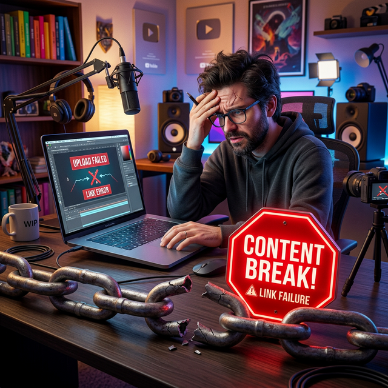

Why Your YouTube Links Are Failing

It is a scenario every creator knows all too well. You spend hours scripting, filming, and editing your latest masterpiece. The thumbnail is crisp, the title is click-worthy, and the content is your best work yet. You hit publish and immediately share the link across Instagram Stories, TikTok, Twitter, and your email newsletter. You expect a surge of traffic.
But the analytics tell a different story. The click-through rate is abysmal. Watch time is low. Subscriptions aren't moving. You start to question the quality of your content or the loyalty of your audience.
Before you blame the algorithm or your fans, you need to look at the bridge between them: the link.
In the modern mobile-first ecosystem, the standard YouTube URL is failing creators. It is introducing friction, killing momentum, and silently draining your potential growth. This isn't about bad content; it's about bad infrastructure. In this deep dive, we will uncover the technical reasons why your YouTube links are failing and provide the actionable solutions you need to fix them today.
The Invisible Enemy: Friction
In user experience (UX) design, friction is anything that slows down or prevents a user from completing a desired action. In the context of YouTube growth, the desired action is simple: Click Link → Watch Video → Subscribe.
When you share a standard link (e.g., youtube.com/watch?v=...) on social media, you are unknowingly inserting multiple points of friction into this journey. Each point of friction acts as a leak in your funnel, causing a percentage of your audience to drop off before they ever see your content.
Most creators assume that if a user clicks a link, they will see the video. But the reality of how mobile apps handle external links tells a much more complicated—and damaging—story.
Reason #1: The "In-App Browser" Trap
This is the single biggest reason your links are failing. When a user clicks a link inside Instagram, TikTok, Facebook, or even some email clients, the platform does not open your device's default browser (like Chrome or Safari). Instead, it opens a stripped-down internal web view.
These internal browsers are designed to keep you inside the social app, not to provide a premium video experience. They are notoriously slow, often lack full functionality, and worst of all, they disconnect you from your identity.
- The Login Wall: Users are rarely logged into YouTube within an Instagram browser. When they land on your video, they see a prompt to log in before they can subscribe, like, or comment. Most users won't bother. They will just swipe away.
- Missing Features: Key features like "Mini-player," "Speed Controls," and easy access to the "Up Next" queue are often missing or broken in these views.
- Slow Load Times: Internal browsers often buffer more than native apps. In the age of instant gratification, a 3-second delay is enough to make a user abandon the video.
Data suggests that up to 40% of potential views are lost simply because the link opened in a sub-par browser environment instead of the native app.
Reason #2: The Mobile Disconnect
Over 70% of YouTube watch time comes from mobile devices. Yet, standard links are designed for the desktop web. They treat a smartphone user the same as a desktop user, which is a fundamental strategic error.
On a desktop, opening a new tab is seamless. On a mobile device, switching contexts is jarring. If your link forces a user to leave their social feed, wait for a browser to load, and then navigate a login screen, you are asking for too much effort.
Mobile users are in a state of "micro-consumption." They are scrolling quickly, looking for instant entertainment. If your link doesn't deliver instant access to the YouTube app, you are fighting against their natural behavior.
Reason #3: Lack of Trust and Context
Have you ever hesitated to click a link because it looked suspicious? Your audience does too.
Standard YouTube links are long, messy, and filled with random characters (e.g., ?v=dQw4w9WgXcQ). To the average user, especially on platforms rife with scams, these links can look untrustworthy.
Furthermore, a raw link provides no context. It doesn't tell the user why they should click. Without a clear value proposition or a branded wrapper, the link feels like a demand rather than an invitation.
Reason #4: Broken Analytics
You cannot fix what you cannot measure. When you share standard links, you lose visibility into how people are interacting with them.
- Did they click from iOS or Android?
- Did they come from Instagram or Twitter?
- Did they actually watch the video after clicking?
Without this data, you are flying blind. You might be pouring energy into promoting on TikTok when your analytics would show that your Instagram audience converts 3x higher. Standard links hide this intelligence, preventing you from optimizing your strategy.
Key Insight: A failing link doesn't just lose a single view; it damages your channel's long-term health. Low retention and low interaction signals tell the YouTube algorithm that your content is not engaging, causing it to suppress your future videos.
The Solution: App-Opening (Deep) Links
So, how do you fix this? The solution is App-Opening Links, also known as Deep Links.
Unlike a standard URL, an app-opening link is smart. It detects the user's device and operating system before routing them.
- Device Detection: It checks if the user is on an iPhone or Android.
- App Verification: It verifies if the YouTube app is installed.
- Seamless Redirect:
- If the app is present, it bypasses the browser entirely and opens the video directly in the YouTube app.
- If the app is NOT present, it gracefully falls back to the mobile website so no one is left behind.
This eliminates the "Login Wall," removes the buffering delays, and ensures the user is already logged in and ready to subscribe. It turns a clunky, frustrating experience into a seamless, one-tap journey.
How to Implement the Fix
Fixing your links doesn't require coding knowledge. Tools like OpeninYoutube have democratized this technology. Here is your action plan:
Step 1: Audit Your Current Links
Go through your Instagram Bio, TikTok Profile, Twitter Pinned Tweet, and recent email newsletters. Identify every instance where you are sharing a raw youtube.com link.
Step 2: Generate Smart Links
Use a tool like OpeninYoutube to generate app-opening versions of your most important URLs (your latest video, your "Start Here" playlist, your channel homepage).
Step 3: Replace and Update
Swap out the old links for the new smart links. Ensure you update your "Link in Bio" tools as well.
Step 4: Monitor the Difference
Watch your analytics. You should see an increase in Click-Through Rate (CTR) and, more importantly, an increase in Average View Duration from external sources.
The "Deep Link" Strategy for Playlists
Don't just deep link to single videos. Create app-opening links for your best-performing playlists.
When a new viewer discovers you via a viral short, send them to a playlist of your best long-form content via a deep link. This keeps them in the app, auto-plays the next video, and maximizes session time, which is a massive signal for channel growth.
Additional Best Practices for Link Success
While app-opening links are the technical fix, you must also optimize the context around them.
Use Branded Short Links
Instead of a long, messy URL, use a branded short link (e.g., go.yourbrand.com/video). This builds trust and looks professional. It signals to the user that the destination is safe and relevant.
Add Clear Calls-to-Action (CTAs)
Never drop a link without context. Tell the user exactly what they will get.
- Weak: "Check out my new video."
- Strong: "Tap below to watch the full tutorial on how I edited this shot."
Specificity drives clicks.
Test on Multiple Devices
Before you publish, test your links on both iOS and Android. Ensure the deep link triggers correctly on both operating systems. A broken link on one platform could be alienating half your audience.
Warning: Avoid using generic URL shorteners (like bit.ly) for this purpose. While they shorten the link, they often break the deep-linking protocol, forcing the user back into a browser. Always use a tool specifically designed for app-opening functionality.
Conclusion: Stop Leaking Views
Creating great content is only half the battle. The other half is ensuring that your audience can actually access it without friction. For too long, creators have accepted the "In-App Browser" trap as a normal part of the process. It is not normal, and it is not acceptable.
Every time a user fails to log in, every time a video buffers, and every time a link looks suspicious, you are losing a potential fan. By switching to app-opening links, you are not just fixing a technical issue; you are respecting your audience's time and experience.
Don't let your hard work go to waste because of a broken bridge. Audit your links today, implement deep linking, and watch as your engagement metrics finally reflect the quality of your content.
Fix Your Links Now
Stop losing views. Use OpeninYoutube to create links that work.
Start Using OpeninYoutube